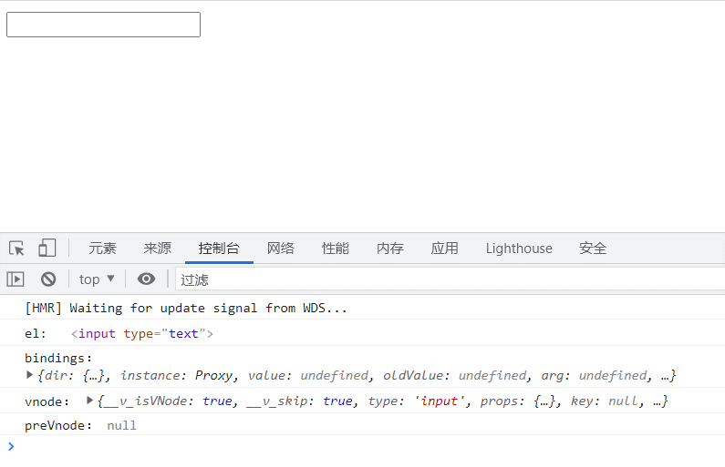
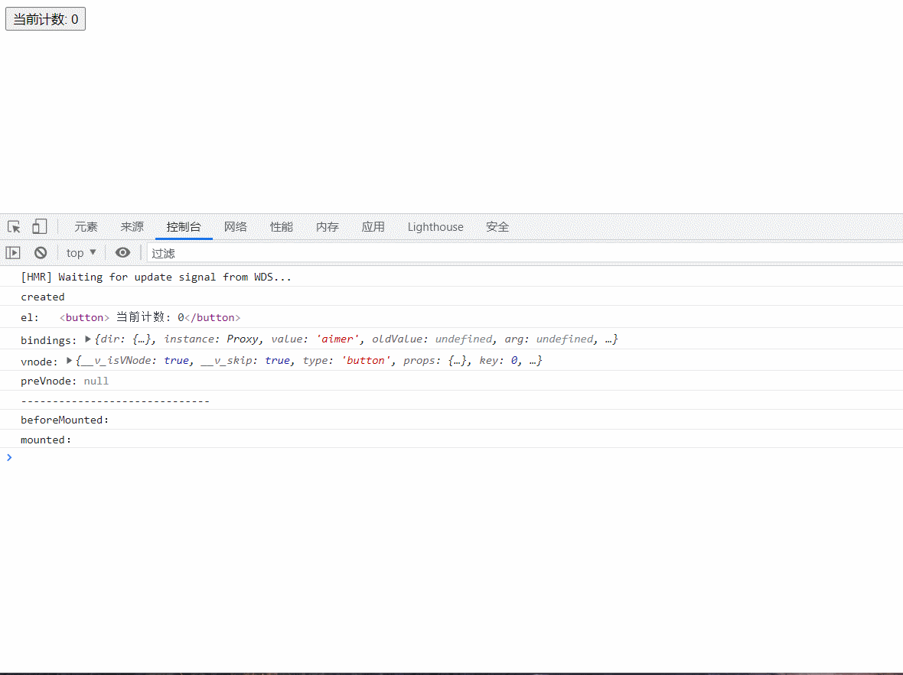
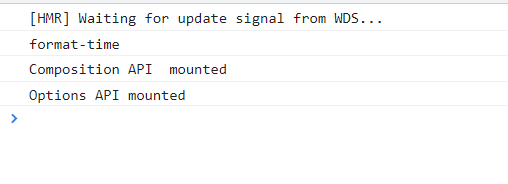

# 1.directives 局部指令
<template> | |
<div> | |
<input type="text" v-focus /> | |
</div> | |
</template> | |
<script> | |
export default { | |
// 局部指令 | |
directives: { | |
focus: { | |
mounted(el, bindings, vnode, preVnode) { | |
el.focus(); | |
console.log("el:", el); | |
console.log("bindings：", bindings); | |
console.log("vnode：", vnode); | |
console.log("preVnode：", preVnode); | |
}, | |
}, | |
}, | |
}; | |
</script> | |
<style scoped></style> |
参考结果：

- el: 元素
- bindings: 修饰符与参数
- vnode: 虚拟节点
- preVnode：前一个虚拟节点
# 2.directives 全局指令
app.directive('focus', { | |
mounted(el,bindings,vnode,preVnode) { | |
el.focus(); | |
console.log("el:", el); | |
console.log("bindings：", bindings); | |
console.log("vnode：", vnode); | |
console.log("preVnode：", preVnode); | |
} | |
}) |
参考结果：打印与上面结果是一样的，但这是全局的！
# 3.directives 生命周期
<template> | |
<div> | |
<button v-if="counter < 3" v-why.a.b="'aimer'" @click="increment"> | |
当前计数: {{ counter }} | |
</button> | |
</div> | |
</template> | |
<script> | |
import { ref } from "vue"; | |
export default { | |
// 局部指令 | |
directives: { | |
why: { | |
created(el, bindings, vnode, preVnode) { | |
console.log("created"); | |
console.log("el:", el); | |
console.log("bindings:", bindings); | |
console.log("vnode:", vnode); | |
console.log("preVnode:", preVnode); | |
console.log("------------------------------"); | |
}, | |
beforeMount() { | |
console.log("beforeMounted："); | |
}, | |
mounted() { | |
console.log("mounted："); | |
}, | |
beforeUpdate() { | |
console.log("beforeUpdate："); | |
}, | |
updated(el, bindings, vnode, preVnode) { | |
console.log("update："); | |
console.log("el:", el); | |
console.log("bindings:", bindings); | |
console.log("vnode:", vnode); | |
console.log("preVnode:", preVnode); | |
console.log("------------------------------"); | |
}, | |
beforeUnmount() { | |
console.log("beforeUnmount："); | |
}, | |
unmounted() { | |
console.log("unmounted："); | |
}, | |
}, | |
}, | |
setup() { | |
const counter = ref(0); | |
const increment = () => counter.value++; | |
return { | |
counter, | |
increment, | |
}; | |
}, | |
}; | |
</script> | |
<style scoped></style> |
参考结果：

- created：在绑定元素的 attribute 或事件监听器被应用之前调用；
- beforeMount：当指令第一次绑定到元素并且在挂载父组件之前调用；
- mounted：在绑定元素的父组件被挂载后调用；
- beforeUpdate：在更新包含组件的 VNode 之前调用；
- updated：在包含组件的 VNode 及其子组件的 VNode 更新后调用；
- beforeUnmount：在卸载绑定元素的父组件之前调用；
- unmounted：当指令与元素解除绑定且父组件已卸载时，只调用一次；
# 4.directives format-time
npm install dayjs // 安装插件 |
# main.js
import { createApp } from 'vue' | |
import App from './App.vue' | |
import registerDirectives from './directives' | |
const app = createApp(App); | |
// 把实例 app 传入 | |
registerDirectives(app); | |
app.mount('#app'); |
# format-time
import dayjs from 'dayjs'; | |
export default function(app) { | |
app.directive("format-time", { | |
created(el, bindings) { | |
// 没有传格式时使用默认格式 | |
bindings.formatString = "YYYY-MM-DD HH:mm:ss"; | |
if (bindings.value) { | |
bindings.formatString = bindings.value; | |
} | |
}, | |
mounted(el, bindings) { | |
const textContent = el.textContent; | |
let timestamp = parseInt(textContent); | |
// 10 位为秒 13 位为毫秒 | |
if (textContent.length === 10) { | |
timestamp = timestamp * 1000 // 转换为毫秒 | |
} | |
// 传入时间戳 (ms) format 传入格式 | |
el.textContent = dayjs(timestamp).format(bindings.formatString); | |
} | |
}) | |
} |
# App
<template> | |
<!-- 自定义指令 v-format-time：传入时间格式 --> | |
<h2 v-format-time="'YYYY/MM/DD HH:mm:ss'">{{ timestamp }}</h2> | |
</template> | |
<script> | |
import { onMounted } from "vue"; | |
export default { | |
mounted() { | |
console.log("Options API mounted"); | |
}, | |
setup() { | |
const timestamp = 1628326173; | |
onMounted(() => { | |
console.log("Composition API mounted"); | |
}); | |
return { | |
timestamp, | |
}; | |
}, | |
}; | |
</script> | |
<style scoped></style> |
参考结果：
directives 生命周期 & Options API 生命周期 & Composition API 生命周期 执行顺序
